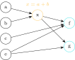

Method
Representation: a DAG; each internal node  has a local function in sum-of-products form of its fan-ins. Cost: the total number of literals in factored form, a proxy for the area after mapping.
has a local function in sum-of-products form of its fan-ins. Cost: the total number of literals in factored form, a proxy for the area after mapping.
Operations:
- decomposition: split a node into simpler ones, with , ;
- extraction: find a common sub-expression (a kernel) of several nodes and make it a node: , , , ;
- substitution: re-express a node with an existing node as divisor: , ;
- factoring: write a node in factored form: ;
- elimination (collapsing): substitute a node into its fan-outs and delete it, when it saves little or blocks other moves;
- simplification: minimise each node with two-level methods using don't-cares from the network (observability, satisfiability).
A script alternates them (eliminate, simplify, extract, resubstitute) until no gain.
Picture

 and
and  and computed once.
and computed once.
The extracted node  is computed once and used by both outputs.
is computed once and used by both outputs.
Intuition
Two-level logic writes every output from scratch; multi-level logic shares partial results, like a program with variables instead of one huge expression per output.
Pitfall
Optimising literals tends to deepen the network, which costs delay. The area-optimised network is the starting point for delay-oriented restructuring and timing-driven mapping.